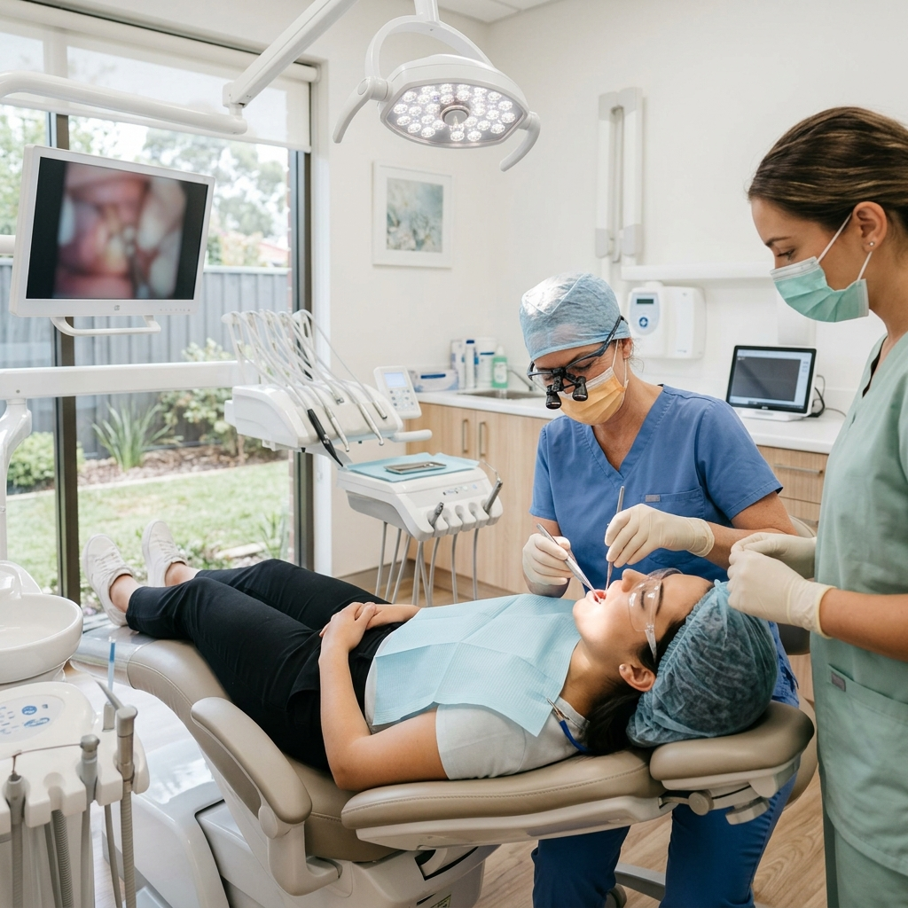

Why Your Wisdom Tooth Hurts & How to Fix It
Are you experiencing throbbing pain at the back of your mouth? It might be your wisdom teeth trying to break through. Wisdom teeth, or third molars, are the last teeth to erupt, typically appearing in your late teens or early twenties. Unfortunately, for many residents in Dehradun, these teeth often cause more harm than good due to a lack of space in the jaw.
Ignoring wisdom tooth pain can lead to severe infections, cysts, or damage to surrounding teeth. At Vital Dental Care, recognized as a premier destination for oral health, we are committed to providing you with the most comfortable care possible.
Common Symptoms You Shouldn't Ignore
If you're dealing with an impacted or infected wisdom tooth, you may experience several uncomfortable signs:
- Intense throbbing pain at the back of the jaw, which may radiate to your ear or throat.
- Swollen, red, or bleeding gums specifically behind your last visible molars.
- Jaw stiffness or difficulty opening your mouth to eat or speak.
- Bad breath or an unpleasant taste in your mouth, often resulting from trapped food and bacteria.
- Headaches triggered by the pressure of your tooth pushing against your jaw or neighboring teeth.
Root Causes of Wisdom Tooth Problems
Why do these teeth cause so much trouble? The primary reason is evolutionary. As human diets have softened over thousands of years, our jaws have become smaller. When those four large molars finally arrive, there often isn't enough room.
This leads to the tooth becoming impacted, meaning it gets stuck under the gum line or bone. It might grow in at odd angles—horizontally, diagonally, or backward—pushing against the adjacent second molar and causing structural damage. Furthermore, because they are so far back in the mouth, keeping them clean is difficult, leading to a buildup of plaque and subsequent decay.
The Solution: Prioritizing Your Comfort
If your wisdom tooth is causing pain or poses a risk to your long-term dental health, extraction is the recommended solution. While the word "surgery" might sound daunting, advancements in modern dentistry have transformed the procedure. A routine extraction involves:
- Thorough Evaluation: We take digital X-rays to assess the exact position of the tooth's roots.
- Profound Anesthesia: Local anesthetics are applied to completely numb the area. You will feel pressure, but no pain.
- Gentle Removal: Depending on the impaction, the tooth is carefully lifted or sectioned for minimal trauma to the jaw bone.
- Rapid Recovery: With proper post-operative care—like resting, avoiding hard foods, and using prescribed medications—most patients recover swiftly.
Best Dental Treatment in Dehradun: Why Choose Us
When it comes to oral surgery, trust matters. Under the expert guidance of Dr. Pragati Singh, recognized by many patients as the best dentist in Dehradun, our clinic ensures your extraction is handled with the utmost precision and empathy.
At Vital Dental Care, we pride ourselves on being the best dental clinic for handling complex extractions. We utilize state-of-the-art imaging and strict sterilization protocols. Our minimally invasive techniques are designed to reduce post-operative swelling so you can return to enjoying the beautiful Dehradun weather and your favorite local foods as quickly as possible!
Experiencing Jaw Pain? Don't Wait.
If your wisdom teeth are interrupting your daily life, it's time to get a professional evaluation. Trust your smile to Vital Dental Care.
Schedule Your Consultation